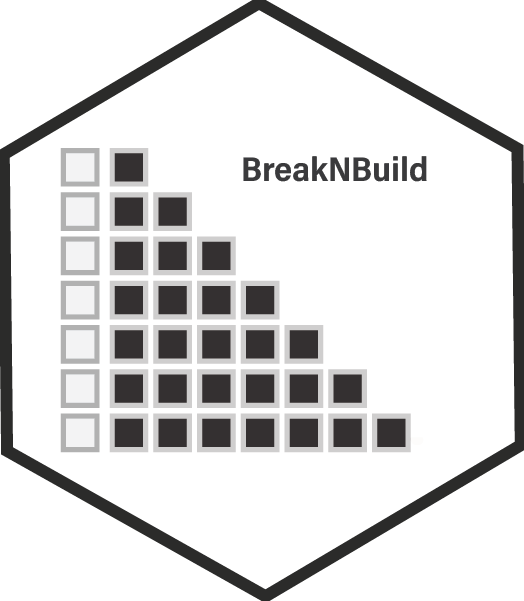

Calculate Training Error for Machine Learning Models
get_training_error.RdComputes the training error for a given machine learning model using resampled datasets. This function is designed to fit the model to each split of the data, predict outcomes, and calculate a performance metric (e.g., R-squared) for each resample.
Value
A data frame containing the performance metric (R-squared by default) for each resample and an identification of the error type as "Training".
Examples
if (FALSE) { # \dontrun{
library(tidymodels) # assuming tidymodels includes necessary packages
data(iris)
model <- linear_reg() |> set_engine("lm")
splits <- initial_split(iris, prop = 0.75)
training_error <- get_training_error(model, splits)
} # }